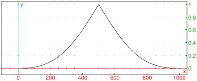

24.6.1 Lines and directed lines in the plane
See Section 25.4.1 for lines in space.
The line
command returns and draws a directed line. It can take its
arguments in four different ways.
-
Two points.
-
line takes two arguments:
P,Q, two points (which can also be given as a list).
- line(P,Q) returns and draws the line whose
direction is from the P to Q.
- A point and a slope.
-
line takes two arguments:
- line(p,slope=m) returns and draws the line
through the given point with the given slope, where
direction of the line is determined by the slope.
- A point and a direction vector.
-
line takes two arguments:
-
P, a point.
- [u1,u2], a direction vector.
- line(P,[u1,u2]) returns and draws the line
through the given point with the direction given by the direction vector.
- An equation.
-
line takes a x+ b y +c=0, an equation.
- line(a x+ b y +c=0) returns and draws the line
given by the equation. The direction of the line is given by
[b,−a].
Example
or:
or:
or:

Remark.
To draw a line with an additional argument for color
(such as color=blue), this argument must be the third
argument. In particular, for a list of two points to specify a line
in this command, the list must be turned into a sequence, such as with
op. For example, given a list L of two points
(possibly the result of a different command) which determines a line,
to draw the line blue enter line(op(L),color=blue);
entering line(L,color=blue) will result in an error.